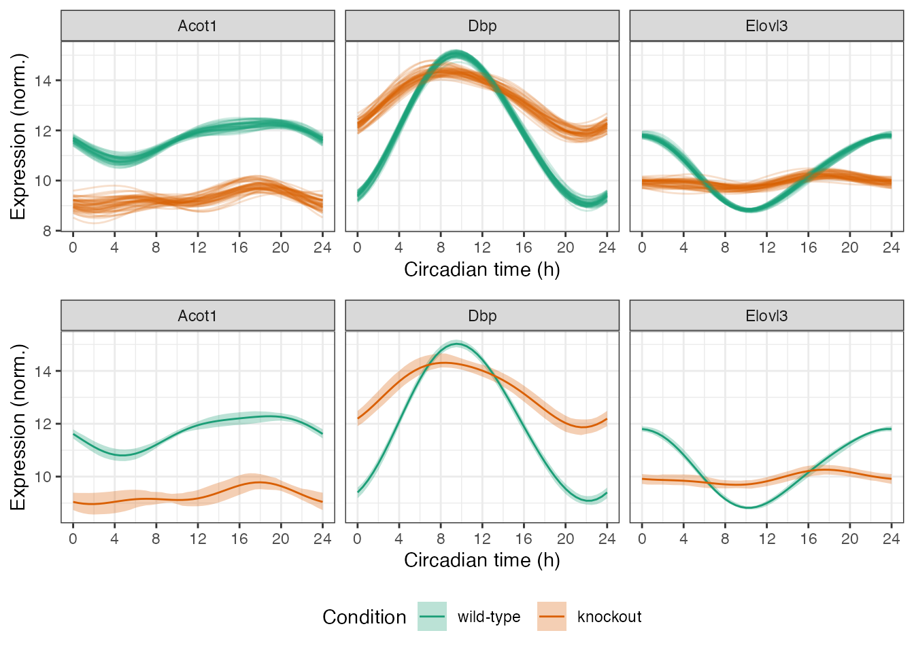
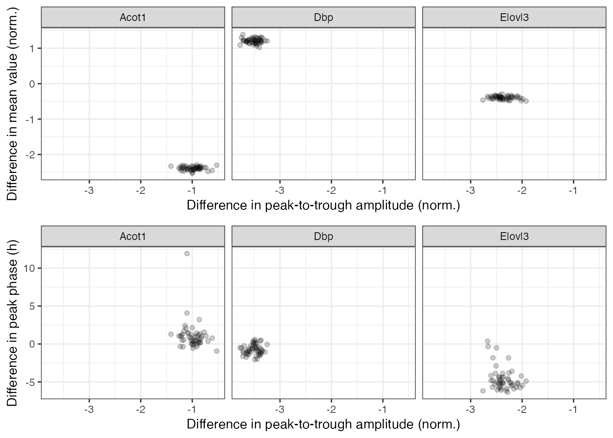

vignettes/uncertainty.Rmd
uncertainty.RmdHere we show how to use limorhyde2 to quantify uncertainty in rhythmicity and differential rhythmicity. This step is not essential and can be computationally expensive, but can provide additional information. As limorhyde2 is a Bayesian approach focused on effect sizes rather than statistical significance, quantifying uncertainty relies on the concepts of posterior probability and credible intervals.
The data are based on liver samples from wild-type and Rev-erb\(\alpha/\beta\) double-knockout mice (Cho et al. 2012 and GSE34018).
library('cowplot')
library('data.table')
library('ggplot2')
library('limorhyde2')
library('qs')
doParallel::registerDoParallel()
theme_set(theme_bw())The expression data are in a matrix with one row per gene and one column per sample. The metadata are in a table with one row per sample. To save time and space, the expression data include only a subset of genes.
y = qread(system.file('extdata', 'GSE34018_data.qs', package = 'limorhyde2'))
y[1:5, 1:5]
#> GSM840516 GSM840517 GSM840518 GSM840519 GSM840520
#> 12686 11.962830 11.923338 11.098814 10.958933 9.256413
#> 13170 8.989743 9.132606 12.381036 12.441759 14.766070
#> 26897 11.515292 11.625519 10.579969 10.601969 11.096489
#> 11287 7.985859 7.930935 7.674688 7.899531 7.768563
#> 11731 8.481372 8.114623 8.058194 8.144267 8.152959
metadata = qread(system.file('extdata', 'GSE34018_metadata.qs', package = 'limorhyde2'))
metadata
#> sample cond time
#> 1: GSM840516 wild-type 0
#> 2: GSM840517 wild-type 0
#> 3: GSM840518 wild-type 4
#> 4: GSM840519 wild-type 4
#> 5: GSM840520 wild-type 8
#> 6: GSM840521 wild-type 8
#> 7: GSM840522 wild-type 12
#> 8: GSM840523 wild-type 12
#> 9: GSM840524 wild-type 16
#> 10: GSM840525 wild-type 16
#> 11: GSM840526 wild-type 20
#> 12: GSM840527 wild-type 20
#> 13: GSM840504 knockout 0
#> 14: GSM840505 knockout 0
#> 15: GSM840506 knockout 4
#> 16: GSM840507 knockout 4
#> 17: GSM840508 knockout 8
#> 18: GSM840509 knockout 8
#> 19: GSM840510 knockout 12
#> 20: GSM840511 knockout 12
#> 21: GSM840512 knockout 16
#> 22: GSM840513 knockout 16
#> 23: GSM840514 knockout 20
#> 24: GSM840515 knockout 20
#> sample cond timeBecause the samples were acquired at relatively low temporal resolution (every 4 h), we use three knots instead of the default four, which reduces the flexibility of the spline curves. We specify condColname so getModelFit() knows to fit a differential rhythmicity model.
fit = getModelFit(y, metadata, nKnots = 3L, condColname = 'cond')
fit = getPosteriorFit(fit)
#> - Computing 100 x 109 likelihood matrix.
#> - Likelihood calculations took 0.07 seconds.
#> - Fitting model with 109 mixture components.
#> - Model fitting took 0.02 seconds.
#> - Computing posterior matrices.
#> - Computation allocated took 0.02 seconds.The posterior fits consist of not just a single set of model coefficients (the posterior means), but distributions of model coefficients. Sampling from these distributions is the first step to quantifying uncertainty in the fits. Here we generate 50 posterior samples, although an actual analysis would require more to accurately estimate the credible intervals.
fit = getPosteriorSamples(fit, nPosteriorSamples = 50L)We can use the posterior samples to quantify uncertainty in the expected measurements, i.e., the fitted curves, by specifying the fitType argument. Here we focus on three genes.
genes = data.table(id = c('13170', '12686', '26897'),
symbol = c('Dbp', 'Elovl3', 'Acot1'))
times = seq(0, 24, 0.5)
measFitSamps = getExpectedMeas(
fit, times = times, fitType = 'posterior_samples', features = genes$id)
measFitSamps[genes, symbol := i.symbol, on = .(feature = id)]
print(measFitSamps, nrows = 10L)
#> time cond feature value posterior_sample symbol
#> 1: 0 wild-type 13170 9.389048 1 Dbp
#> 2: 0 wild-type 12686 11.879609 1 Elovl3
#> 3: 0 wild-type 26897 11.516696 1 Acot1
#> 4: 0 knockout 13170 12.149865 1 Dbp
#> 5: 0 knockout 12686 10.193404 1 Elovl3
#> ---
#> 14696: 24 wild-type 12686 11.846712 50 Elovl3
#> 14697: 24 wild-type 26897 11.494776 50 Acot1
#> 14698: 24 knockout 13170 11.940549 50 Dbp
#> 14699: 24 knockout 12686 10.013645 50 Elovl3
#> 14700: 24 knockout 26897 9.140671 50 Acot1Given the expected measurements from the posterior samples, we can compute the lower and upper bounds of the credible interval for each combination of feature, condition, and time-point. By default, getExpectedMeasIntervals() calculates the 90% equal-tailed interval.
measFitInts = getExpectedMeasIntervals(measFitSamps)
print(measFitInts, nrows = 10L)
#> time cond feature symbol lower upper
#> 1: 0 wild-type 13170 Dbp 9.312920 9.545719
#> 2: 0 wild-type 12686 Elovl3 11.742144 11.956802
#> 3: 0 wild-type 26897 Acot1 11.451277 11.683526
#> 4: 0 knockout 13170 Dbp 11.989281 12.456412
#> 5: 0 knockout 12686 Elovl3 9.896537 10.239946
#> ---
#> 290: 24 wild-type 12686 Elovl3 11.742144 11.956802
#> 291: 24 wild-type 26897 Acot1 11.451277 11.683526
#> 292: 24 knockout 13170 Dbp 11.989281 12.456412
#> 293: 24 knockout 12686 Elovl3 9.896537 10.239946
#> 294: 24 knockout 26897 Acot1 9.094299 9.510977It’s always a good idea to also calculate the posterior mean fitted curves.
measFitMean = getExpectedMeas(fit, times = times, features = genes$id)
measFitMean[genes, symbol := i.symbol, on = .(feature = id)]Now we can plot the results. In the first row, each curve corresponds to a posterior sample. In the second row, the ribbons indicate the credible intervals.
timeBreaks = seq(0, 24, 4)
pal = 'Dark2'
p1 = ggplot(measFitSamps) +
facet_wrap(vars(symbol), scales = 'fixed', nrow = 1) +
geom_line(aes(x = time, y = value, color = cond,
group = interaction(cond, posterior_sample)), alpha = 0.2) +
labs(x = 'Circadian time (h)', y = 'Expression (norm.)', color = 'Condition') +
scale_x_continuous(breaks = timeBreaks) +
scale_color_brewer(palette = pal) +
theme(legend.position = 'none')
p2 = ggplot() +
facet_wrap(vars(symbol), scales = 'fixed', nrow = 1) +
geom_ribbon(aes(x = time, ymin = lower, ymax = upper, fill = cond),
alpha = 0.3, data = measFitInts) +
geom_line(aes(x = time, y = value, color = cond), data = measFitMean) +
labs(x = 'Circadian time (h)', y = 'Expression (norm.)', color = 'Condition',
fill = 'Condition') +
scale_x_continuous(breaks = timeBreaks) +
scale_fill_brewer(palette = pal) +
scale_color_brewer(palette = pal) +
theme(legend.position = 'bottom')
plot_grid(p1, p2, ncol = 1, rel_heights = c(1, 1.25))
We can also use the posterior samples to quantify uncertainty in the statistics, again by specifying the fitType argument.
rhyStatsSamps = getRhythmStats(fit, features = genes$id, fitType = 'posterior_samples')
diffRhyStatsSamps = getDiffRhythmStats(fit, rhyStatsSamps)
diffRhyStatsSamps[genes, symbol := i.symbol, on = .(feature = id)]
print(diffRhyStatsSamps, nrows = 10L)
#> feature posterior_sample cond1 cond2 diff_mean_value
#> 1: 12686 1 wild-type knockout -0.4083296
#> 2: 12686 2 wild-type knockout -0.3386511
#> 3: 12686 3 wild-type knockout -0.4269917
#> 4: 12686 4 wild-type knockout -0.3265127
#> 5: 12686 5 wild-type knockout -0.3463000
#> ---
#> 146: 26897 46 wild-type knockout -2.3821759
#> 147: 26897 47 wild-type knockout -2.3301956
#> 148: 26897 48 wild-type knockout -2.4299884
#> 149: 26897 49 wild-type knockout -2.3018778
#> 150: 26897 50 wild-type knockout -2.4027325
#> diff_peak_trough_amp diff_rms_amp diff_peak_phase diff_trough_phase
#> 1: -2.5671171 -0.8933007 -1.8136085 -0.8240157
#> 2: -2.5290374 -0.9056453 -5.3312776 -0.9626241
#> 3: -2.6030130 -0.9237720 -4.8303454 -0.5388696
#> 4: -2.2099703 -0.7781436 -5.1200017 -3.1584134
#> 5: -2.2718334 -0.8052674 -4.7144006 -1.0342290
#> ---
#> 146: -1.2587567 -0.4015045 1.0530490 7.2756453
#> 147: -1.4133809 -0.5230411 1.2877243 -2.3325067
#> 148: -1.0275415 -0.3705012 0.8332398 6.0653608
#> 149: -0.5256044 -0.1902584 -0.9409261 4.1293078
#> 150: -0.9094560 -0.3389905 0.9645104 -1.9435250
#> rms_diff_rhy symbol
#> 1: 2.7237402 Elovl3
#> 2: 2.9991839 Elovl3
#> 3: 2.9245911 Elovl3
#> 4: 2.8911712 Elovl3
#> 5: 2.5913180 Elovl3
#> ---
#> 146: 1.6513788 Acot1
#> 147: 1.6882807 Acot1
#> 148: 1.5340596 Acot1
#> 149: 0.9794548 Acot1
#> 150: 1.2876377 Acot1In the plots below, each point represents a posterior sample.
p1 = ggplot(diffRhyStatsSamps) +
facet_wrap(vars(symbol), nrow = 1) +
geom_point(aes(x = diff_peak_trough_amp, y = diff_mean_value), alpha = 0.2) +
labs(x = 'Difference in peak-to-trough amplitude (norm.)',
y = 'Difference in mean value (norm.)')
p2 = ggplot(diffRhyStatsSamps) +
facet_wrap(vars(symbol), nrow = 1) +
geom_point(aes(x = diff_peak_trough_amp, y = diff_peak_phase), alpha = 0.2) +
labs(x = 'Difference in peak-to-trough amplitude (norm.)',
y = 'Difference in peak phase (h)')
plot_grid(p1, p2, ncol = 1)
Finally, we can compute credible intervals for the rhythmic and differentially rhythmic statistics. Again, by default these are 90% equal-tailed intervals. Currently getStatsIntervals() does not calculate intervals for phase-based statistics, since phase and phase difference are circular quantities.
rhyStatsInts = getStatsIntervals(rhyStatsSamps)
print(rhyStatsInts, nrows = 10L)
#> cond feature statistic lower upper
#> 1: wild-type 13170 peak_value 14.9142461 15.1623426
#> 2: wild-type 12686 peak_value 11.7551992 11.9611959
#> 3: wild-type 26897 peak_value 12.2489294 12.5386247
#> 4: knockout 13170 peak_value 14.1364485 14.4867027
#> 5: knockout 12686 peak_value 10.1298897 10.5075167
#> ---
#> 20: wild-type 12686 rms_amp 1.0160493 1.1338332
#> 21: wild-type 26897 rms_amp 0.5069692 0.7253600
#> 22: knockout 13170 rms_amp 0.7402332 0.9774765
#> 23: knockout 12686 rms_amp 0.1561527 0.3623270
#> 24: knockout 26897 rms_amp 0.1459739 0.3350913
diffRhyStatsInts = getStatsIntervals(diffRhyStatsSamps)
print(diffRhyStatsInts, nrows = 10L)
#> cond1 cond2 feature statistic lower upper
#> 1: wild-type knockout 12686 diff_mean_value -0.4761391 -0.3273693
#> 2: wild-type knockout 13170 diff_mean_value 1.0946908 1.3077532
#> 3: wild-type knockout 26897 diff_mean_value -2.4744074 -2.3132504
#> 4: wild-type knockout 12686 diff_peak_trough_amp -2.6358331 -2.0279483
#> 5: wild-type knockout 13170 diff_peak_trough_amp -3.7189186 -3.3477383
#> ---
#> 8: wild-type knockout 13170 diff_rms_amp -1.3045149 -1.1650380
#> 9: wild-type knockout 26897 diff_rms_amp -0.4515353 -0.2527135
#> 10: wild-type knockout 12686 rms_diff_rhy 2.6023486 3.1263108
#> 11: wild-type knockout 13170 rms_diff_rhy 3.5986650 4.0251194
#> 12: wild-type knockout 26897 rms_diff_rhy 1.1039042 1.8415935